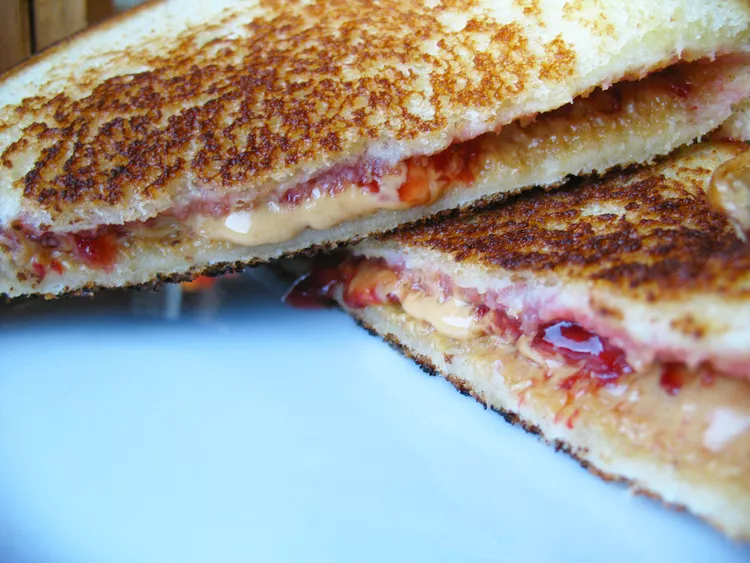

Grilled PB&J
Home

Grilled Peanutbutter and Jelly Sandwich
This may be the best PB&J I can find.
The warmth and crunch of the toasted bread combined with the sweet, savory, and salty combination of creamy, fat reduced Jif PB and jelly is amazing
I could have one of these every single day of my life!
Ingredients
- 2 teaspoons butter (optional, I don't like butter)
- 2 slices white bread (or any bread that you want)
- 2 teaspoons of any flavor fruit jelly
- 1 teaspoon peanut butter (or more if you want to enjoy yourself :))
Directions
- Heat a griddle or skillet to 350 degrees F (175 degrees C).
- Spread butter on one side of each slice of bread. Spread jelly on the unbuttered side of one slice of bread; spread peanut butter on the other unbuttered side. Place bread slices together, so peanut butter and jelly are in the middle.
- Cook on the preheated griddle until golden brown and heated through, about 4 minutes per side.